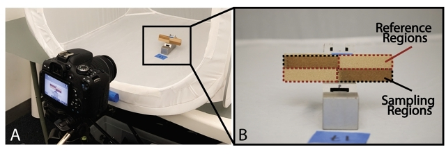
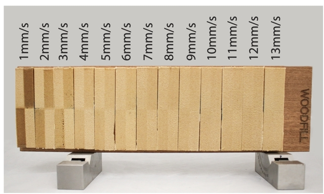
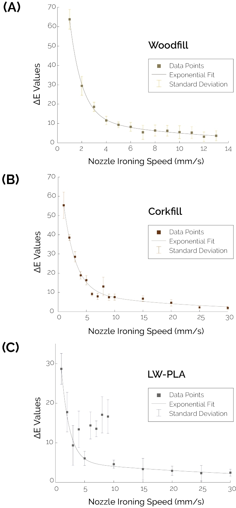
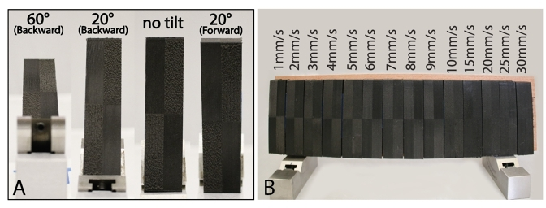
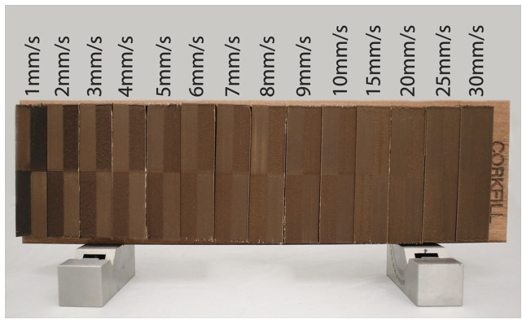
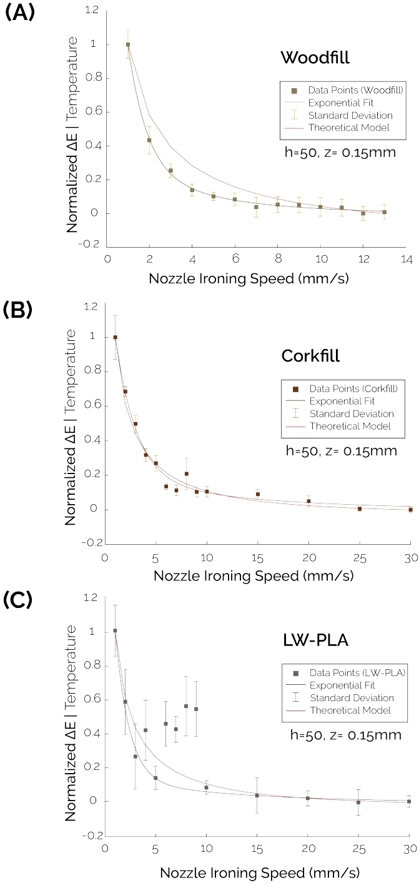
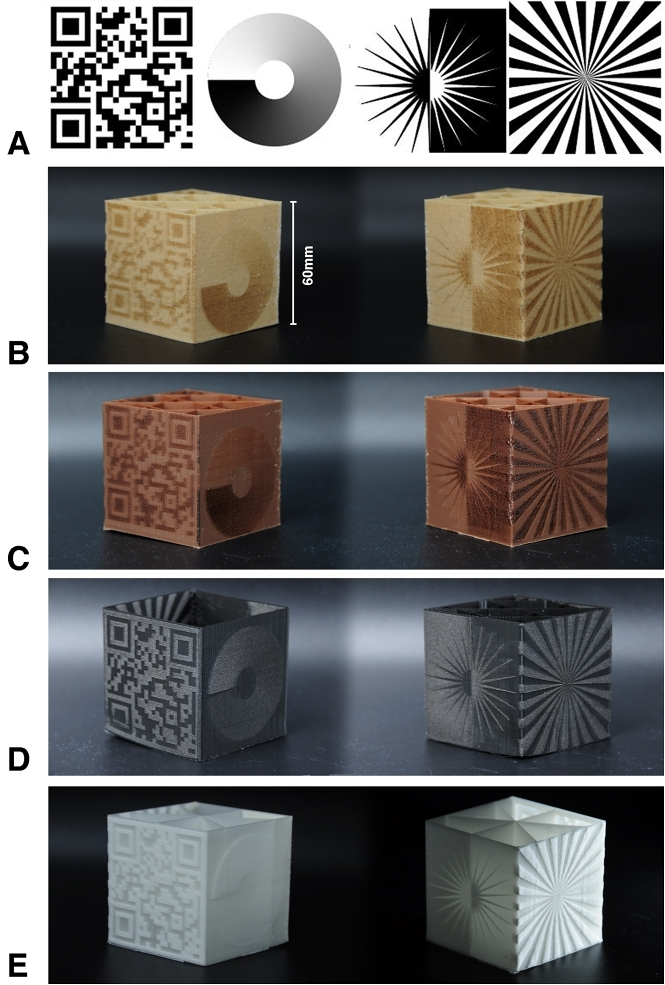
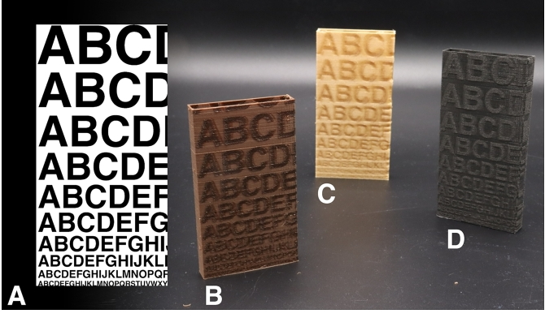
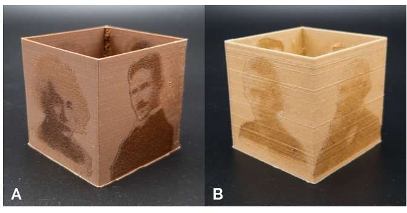

6. Technical Characterization
Our technical evaluation determines achievable color shade difference as a function of ironing speed on three types of filament: Woodfill, Corkfill, and a foaming filament (LW-PLA, Black). We also characterize the performance of our method in its capability to reproduce fine shade details on the surface of objects.
6.1 Color Difference
We 3D printed samples of 80mm x 20mm to which a 2x2 rectangular grid of different regions was applied. Two of these were the reference regions that were ironed at a constant high speed at which no significant re-heating, and therefore no color change, occurs. The other two regions were ironed at lower speeds and varied per sample; these were the sampling regions (Figure 11 b). All samples were printed on an Ultimaker S5.
The samples were placed inside a diffusion box (Figure 11 a) for controlled lighting conditions and photographed with a DSLR camera. We used the CIELAB [8] color space to measure the colors of the samples.
To gauge the color difference our method can achieve, we use Δ E as the metric. Δ E (Equation 4) represents the Euclidean distance between two colors in CIELAB color space. A Δ E less than or equal to 1.0 is considered to be a non-perceivable color difference for the human eye [8].
The conversion to CIELAB and the calculation of the Δ E were done in an interactive Matlab script that we developed. Since our samples have two sampling regions and two reference regions within a single print, we calculate Δ E with respect to each reference, then report the global average (Figure 11 b). Because the color difference values are all measured relative to the reference zones, possible variations in lighting conditions are eliminated.

Figure 11: (A) Experimental set-up for our approach consists of a DSLR camera at a fixed distance and angle from the sample. (B) The sample consists of two main regions: reference regions and sampling regions which are ironed.
Woodfill Filament: We prepared 13 samples with fixed printing nozzle parameters (200°C printing temperature, 0.15 mm layer height, 0.4mm line width, no infill, wall-count 2). The ironing temperature was 340 °C, and the ironing speed was varied from 1mm/s to 13 mm/s for the sampling regions. All reference regions had an ironing speed of 40 mm/s.
The results of the printed samples are illustrated in Figure 12.

Figure 12: Contrast in Woodfill filament prints as ironing speed varies from 1 mm/s to 13 mm/s.
As shown in Figure 13, as the ironing speed increases, the Δ E value decreases exponentially until it plateaus. The maximum Δ E was measured in the 1mm/s sample with a value of 63.8 ± 5.06.

Figure 13: Exponential fit for color difference data values for ironed regions of Woodfill (A), Corkfill (B), and LW-PLA Filament (C) relative to reference regions as functions of ironing speed.
Foaming filament: We printed 14 samples of foaming (LW-PLA) filament with printing parameters (200°C printing temperature, 0.15 mm layer height, 0.4mm line width, no infill, wall-count 2) and an ironing temperature of 300°C. This ironing nozzle temperature (40°C lower compared to Woodfill and Corkfill) is to eliminate overheating of the filament through ironing. Unlike prints made with Woodfill and Corkfill materials, ironing foaming filament results in lighter regions compared to the printed reference areas (Figure 14 b).
Because of the glossiness of the non-foamed material, the viewing angle and lighting direction affect the perceived color difference within the prints. For instance, in Figure 14 a, the test pattern is clearly distinguishable at no tilt. However, when the same sample is tilted forward, it appears darker, and when tilted backward, it appears lighter. Within our evaluation, we selected the orientation that yielded a stable color difference with minimal reflections, which is a vertical orientation with no tilt.
Finally, the range of speeds tested was from 1mm/s to 30 mm/s for the sampling regions, and 40 mm/s for the reference regions. The printed results are illustrated in Figure 16, where we generally observe an exponential decay of contrast values as a function of ironing speed. The maximum Δ E attained at this orientation under non-directional lighting is 28.66 ± 3.91 at 1mm/s ironing speed. The outliers between 4mm/s and 9mm/s can be attributed to the sample's changed glossiness at both ironed and reference regions, resulting in higher contrast or Δ E values, as can be seen in Figure 14 b.

Figure 14: (A) Change in part glossiness and clarity is based on tilt angle. Tilting forward universally makes the test pattern darker, and tilting backward makes it glossier. (B) shows the contrast in foaming filament prints as ironing speed varies from 1 mm/s to 30 mm/s.
Corkfill filament: 14 samples of Corkfill prints were prepared with printing parameters (200°C printing temperature, 0.15 mm layer height, 0.4mm line width, no infill, wall-count 2) and an ironing temperature of 340 °C. The range of speeds tested was from 1mm/s to 30 mm/s for the sampling regions and 40 mm/s for the reference regions. Figure 15 shows the print result.

Figure 15: Contrast in Corkfill filament prints as ironing speed varies from 1 mm/s to 30 mm/s.
Similar to the measurements of the Woodfill and foaming filaments, the Δ E values for Corkfill decrease exponentially with an increasing ironing speed (Figure 13). The maximum Δ E value for Corkfill was found to be 55.33 ± 6.81, obtained by ironing at 1mm/s.
Measured Characteristic of Δ E: To get a characteristic description of the measurements in an equation, we first normalize the measured Δ E. We can describe the relationship between the measured Δ E and ironing speed in mm/s with the exponential equation:
where v is the velocity in mm/s. For normalized Δ E, the constant values we found for the three filaments are given in Table 2. All the values are within a 95% confidence bound, while in the case of foaming filament, this confidence bound excludes the outliers at ironing speeds of 4,6,7,8 and 9 mm/s.
Table 2: The constant values in the normalized Δ E equation (Eq. 5) for different filaments.
|
a |
b |
c |
d |
| Woodfill |
2.283 |
-1.115 |
0.318 |
-0.239 |
| Corkfill |
0.191 |
-0.076 |
1.347 |
-0.482 |
| LW-PLA |
0.144 |
-0.086 |
1.828 |
-0.734 |
Validation of the theoretical model: The experimental results correspond to the general trend we expect from our theoretical model, which is an exponentially decaying graph as a function of increasing ironing speed.
By normalizing the data from the theoretical model between 1 and 0, we are able to compare the characteristic relationship between ironing velocity and measured Δ E and the modeled ironing velocity as a function of temperature at z= 0.15mm (layer height).
Figure 16 b shows this result for Corkfill filament. The theoretical model fits the experimental data well with a maximum normalized error of 0.0672 (i.e., 6.72% of the max value) and an average error of 0.0168 (i.e., 1.68% of the max value). We also generally conclude from the closeness of fit between the experimental and theoretical models how the relationship between the normalized temperature values and normalized Δ E values is linear.
Using the same method for the Woodfill printed samples, we find that the experimental model fits the theoretical model generally but with a larger error margin in comparison to the Corkfill model (max error of 0.16 or 16%, and average error of 0.06 or 6%). This is also true for the foaming LW-PLA filament with a max error of 0.1329 or 13.29%, and a mean error of 0.035 or 3.5%) excluding outliers.

Figure 16: Comparison between theoretical and experimental model fits to contrast data values for Woodfill (A), Corkfill (B), and LW-PLA (C).
6.2 Detail Reproduction
To evaluate the capability of our method to reproduce a variety of visual features and texture designs, we prepared samples that test rapid variations in color shade, thin features, and gradient transitions of color. All tests were carried out for LW-PLA, Woodfill, and Corkfill filaments.
Detail and gradient testing: A 60mm x 60mm x 60mm cube was designed, and a test image was applied to each of the four vertical faces. The test images are illustrated in Figure 17 a. The first test image is a QR code, which tests a practical application of rapid spatial transitions with significant color differences. The second image aims to evaluate the ability to produce smooth gradients. The third tests thin light lines on a dark background and dark lines on a light background at different angles. Finally, the last image evaluates rapid transitions between minimum and maximum reheating.

Figure 17: A) Patterns for testing resolution and detail capabilities. B) Test pattern printed with Woodfill. C) Corkfill. D) Black LW-PLA. E) Translucent "natural" LW-PLA.
All samples were printed successfully with Woodfill, Corkfill, black LW-PLA, and natural LW-PLA; see Figure 17 b, c, d, e. The prints allowed a closer inspection of the performance of our method with the test images. For all materials, the QR codes were of sufficient quality and contrast to be directly readable by a regular smartphone camera. Also, the circular gradient came out with an even and smooth transition with all materials. The main edge case is the test of thin lines printed with Woodfill. For these specific features, it might be necessary to reconsider the ironing parameters (i.e. nozzle temperature and speed). However, for Corkfill and LW-PLA, the lines were produced well and showed clear sharp transitions irrespective of line orientation.
Text legibility: To evaluate at which sizes legible text can be reproduced, samples of 50mm x 100mm were created, to which an image with text was applied. The text size varied from 40pt down to 5pt; see Figure 18 a. The resulting samples are shown in Figure 18 b, c, and d. We found that our method can reproduce the larger font sizes on all three materials. For LW-PLA, the smallest readable font size was 9pt, while for Woodfill and Corkfill, the smallest readable font size was 14pt.

Figure 18: Test samples for text legibility at different font sizes. A) test image. B) Corkfill sample. C) Woodfill sample. D) LW-PLA sample.
Photographs: Evaluating the capability of our method to reproduce photographic images, a 60mm x 60mm x 60mm sample was prepared, to which 4 portrait photographs were applied. The tests show that our method is able to reproduce the photographs with fine details and sufficient color contrast using Corkfill (Figure 19 a) and Woodfill (Figure 19 b). For the performance of our method with LW-PLA, see the photographic texture in Figure 1 and Figure 4.

Figure 19: Test samples evaluating the capability to reproduce photographs with different color shades and fine details. A) Corkfill prints. B) Woodfill prints.